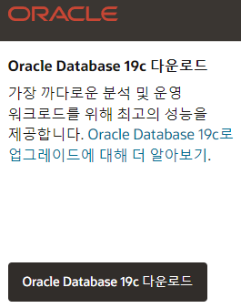
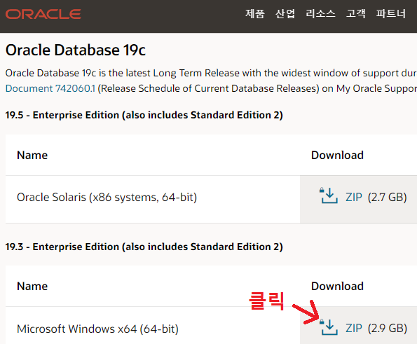
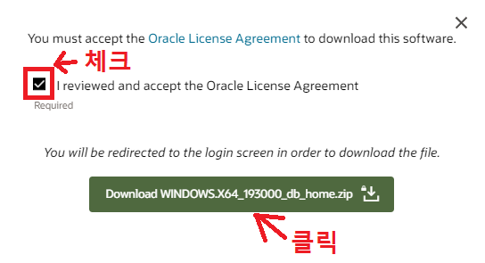
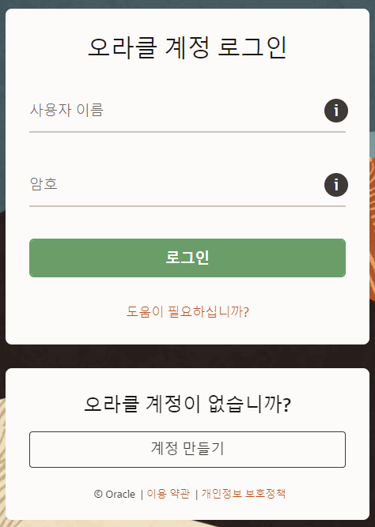
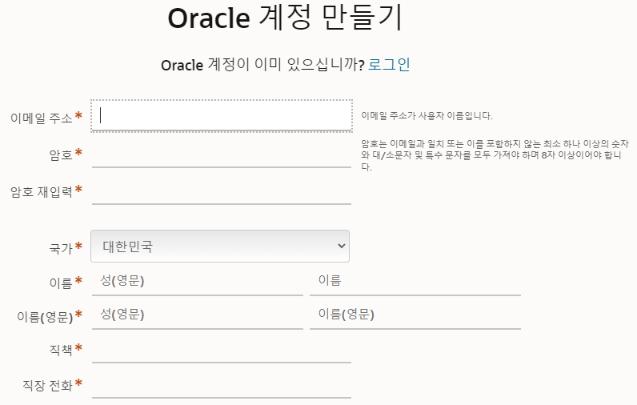

오라클을 설치하려면 조금 고민해야 합니다.
이유는 용량이 크고 삭제가 어렵기 때문입니다.
설치하기로 정했다면 오라클 공식 홈페이지(https://www.oracle.com/kr/database/technologies/)에 접속합니다.
스크롤을 살짝 내려 'Oracle database 19c 다운로드'를 클릭합니다.
19c의 윈도우 버전 ZIP을 클릭합니다.
화면 중앙에 라이선스 동의 창이 나타나면 체크박스에 체크하고 아래 Download 버튼을 클릭합니다.
아래 계정 만들기를 클릭합니다.
정보들을 입력하는데 비밀번호는 영문 대문자와 소문자가 모두 있어야 하는게 특징입니다.
정보들을 입력했으면 '계정 만들기'를 클릭합니다.